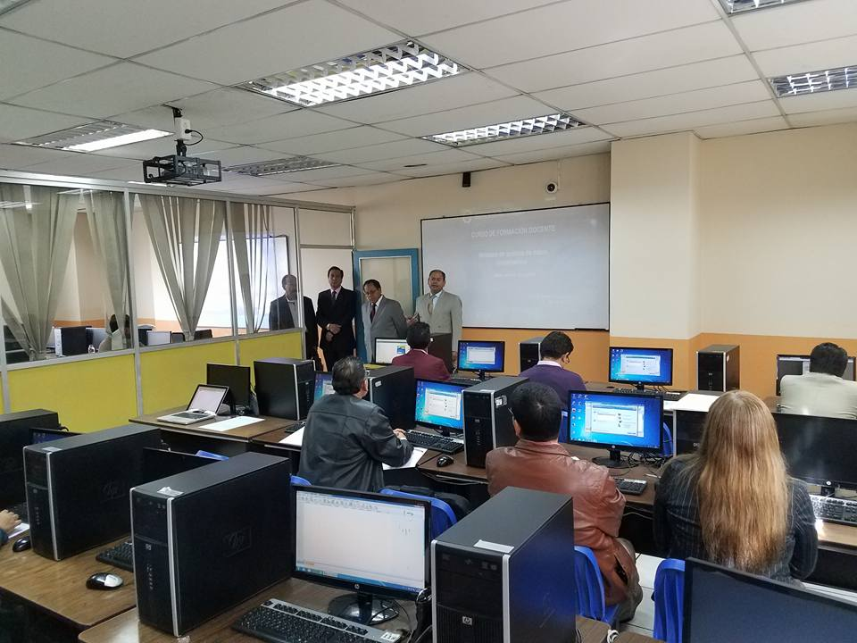

Registro de estudiantes de la carrera de informática
¿Qué somos?
La carrera de Pedagogía en Informática forma profesionales con competencias en la enseñanza y aplicación de las tecnologías de la información en el ámbito educativo.
Aprendizaje de ultima calidad
Características
Buenas instalaciones, compañerismo, maquinas de ultima generacion.
Formulario de estudiantes
Disfruta con nosotros en esta gran carrera
Te esperamos
Universidad Central del Ecuador
Beneficios de entrar a nuestra carrera
Internet Gratis y computadoras
En nuestra carrera tenemos un gran numero e laboratorios con el objetivo de mejorar tu aprendizaje.
Fácil acceso
Es una carrera con un puntaje nivelado que permite que todos puedan ingresar
Fácil mobvilizacion
La Facultad de Filosofia tiene acensores.